和モダンタイプ
畳の落ち着きとベッドの快適さを合わせた、渓谷側のお部屋です。
【ご宿泊料金／2名1室お一人様】
1泊2食付 21,800円〜25,300円（税込）
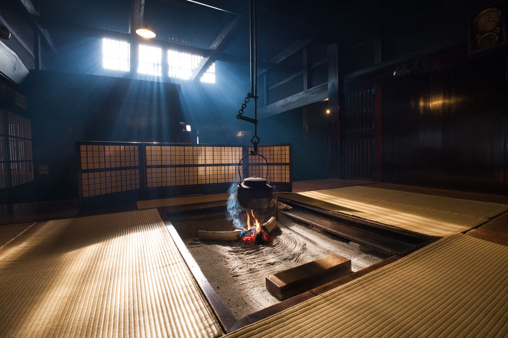
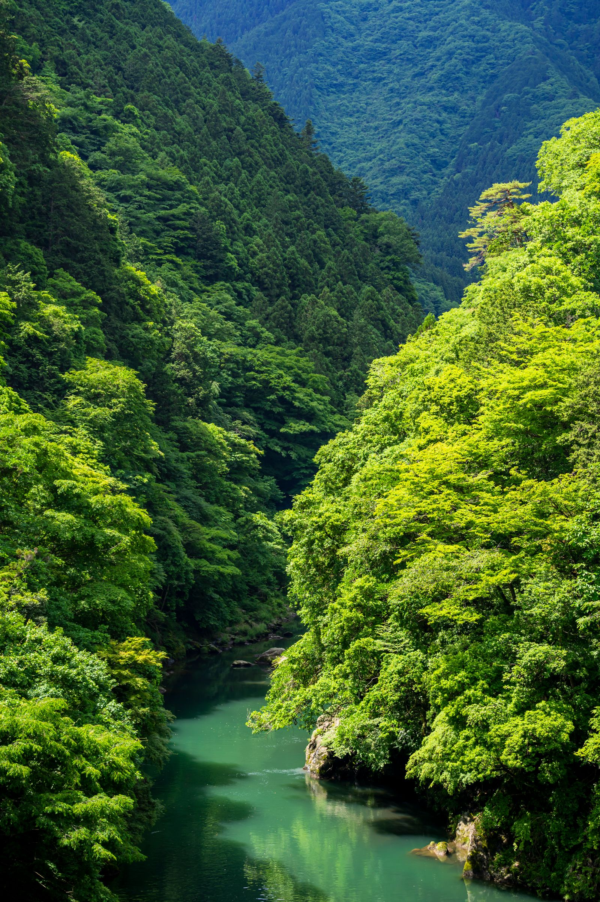

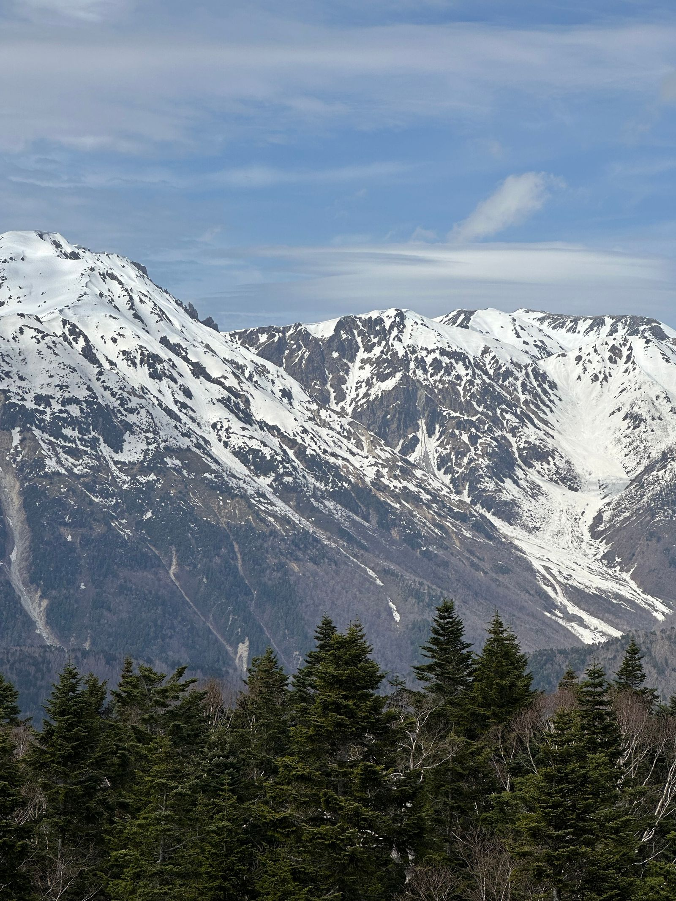
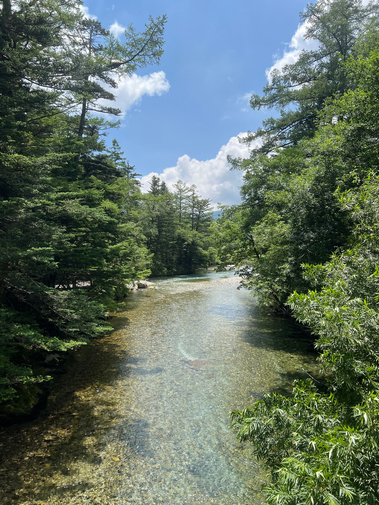
渓声館は、奥飛騨の渓谷沿いに建つ、
築百年の古民家を移築した小さな宿です。
川のせせらぎと囲炉裏の火、
そして山あいに湧く湯。
ここにしかない静けさを、
どうぞゆっくり味わってください。
渓声館は、次のことを大切にしている宿です。

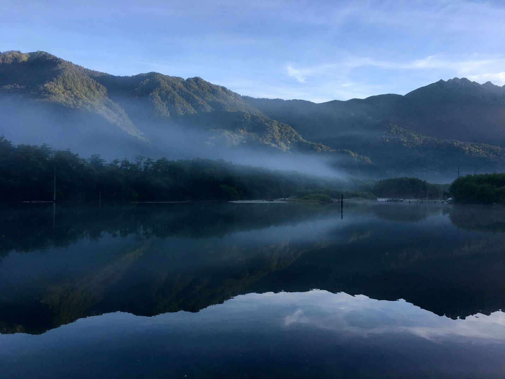
渓声館の露天風呂は、川面からわずか数メートル。湯船につかると、せせらぎの音だけが聞こえてきます。便利さよりも、山の宿らしい「不便さ」と「非日常」を大切に。ほかでは味わえない、奥飛騨の湯をご堪能ください。
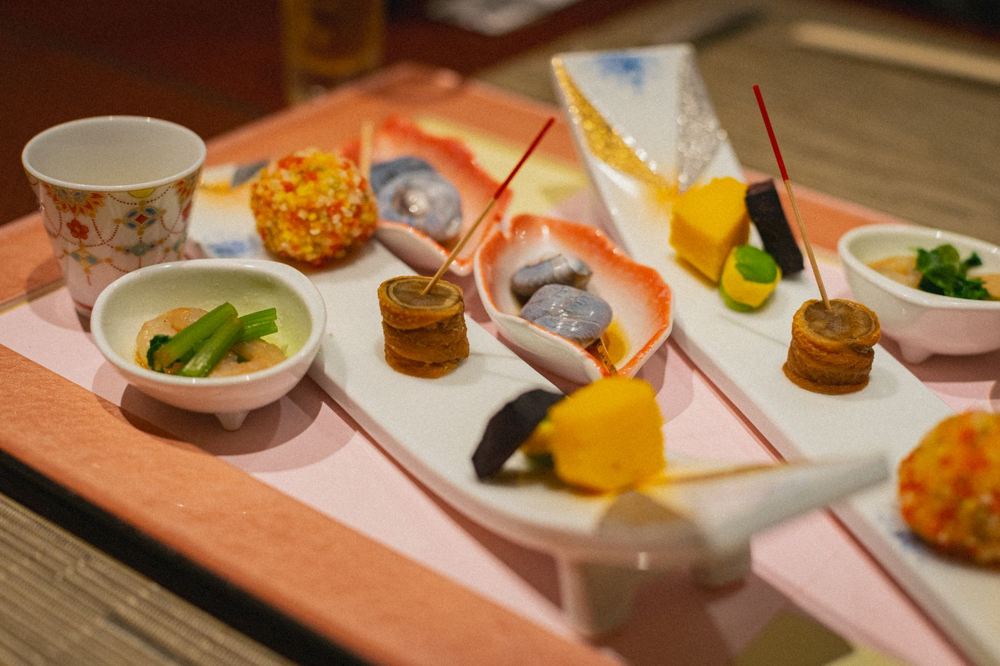
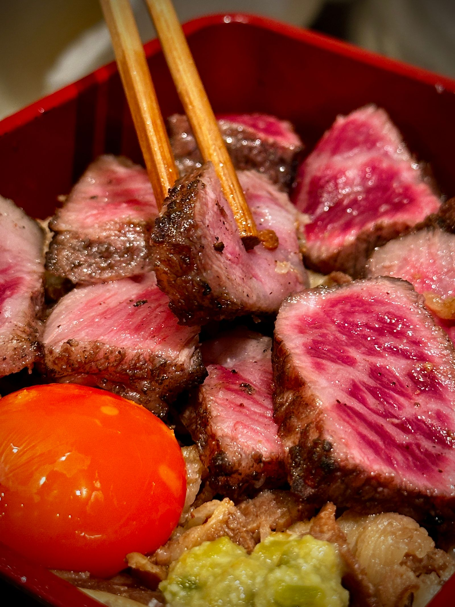
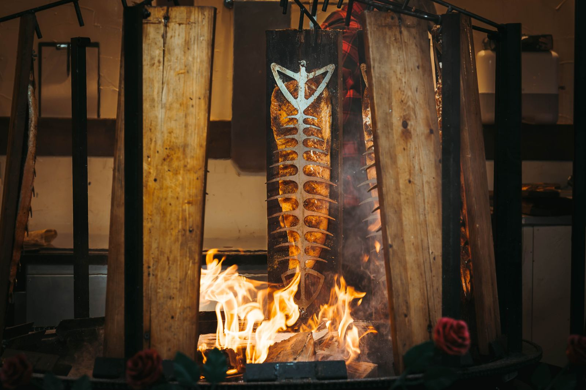
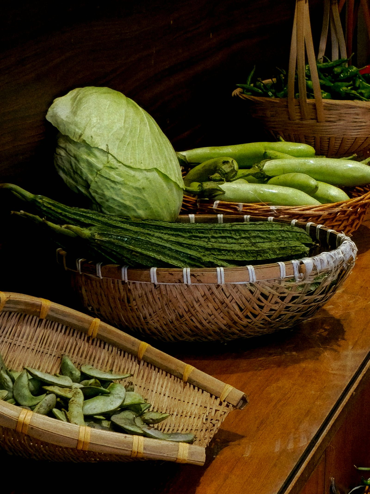
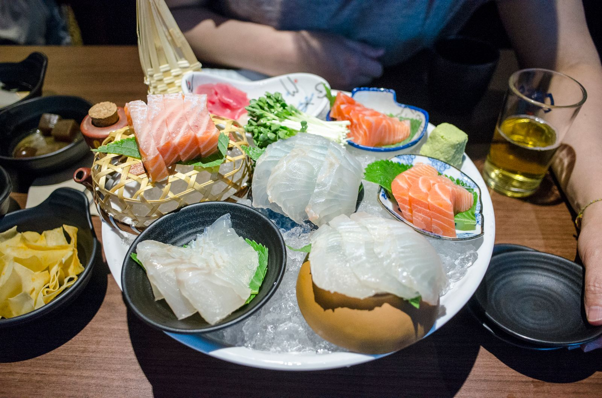
ご夕食は、季節ごとに山の食材をたっぷり使った会席料理。囲炉裏でじっくり焼き上げる川魚は、宿いちばんの名物です。料理によく合う地酒もご用意しています。
ご到着の7日前までにお知らせいただいた場合、料理長と相談のうえできる限りの代替料理をご用意いたします。
！ 当日のお申し出による献立の変更は承っておりません。
！ 内容によっては、お食事のご用意が難しい場合がございます。
畳の落ち着きとベッドの快適さを合わせた、渓谷側のお部屋です。
【ご宿泊料金／2名1室お一人様】
1泊2食付 21,800円〜25,300円（税込）
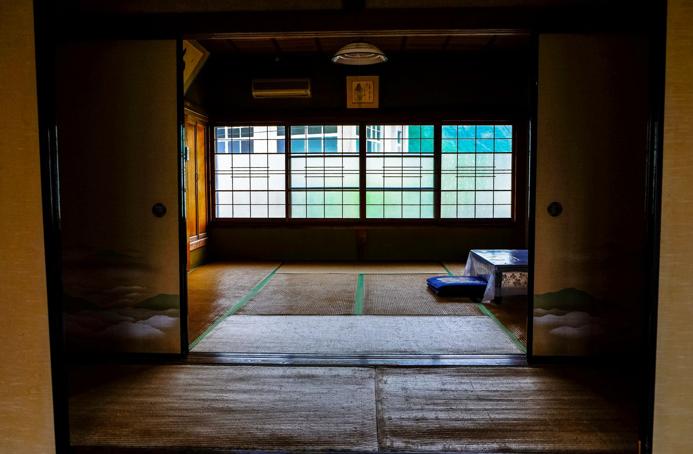
古民家の太い梁をそのまま生かした客室。囲炉裏を備えたお部屋もございます。
【ご宿泊料金／2名1室お一人様】
1泊2食付 21,800円〜25,300円（税込）

専用の露天風呂と囲炉裏を備えた一棟貸しの離れ。記念日のご旅行におすすめです。
【ご宿泊料金／2名1室お一人様】
1泊2食付 38,500円〜（税込）
※ 地図は奥飛騨温泉郷周辺のイメージです
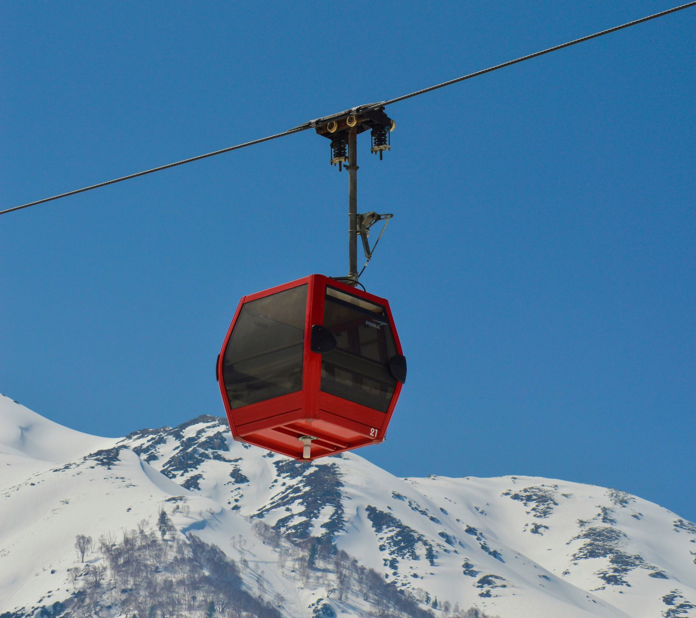
車で約5分
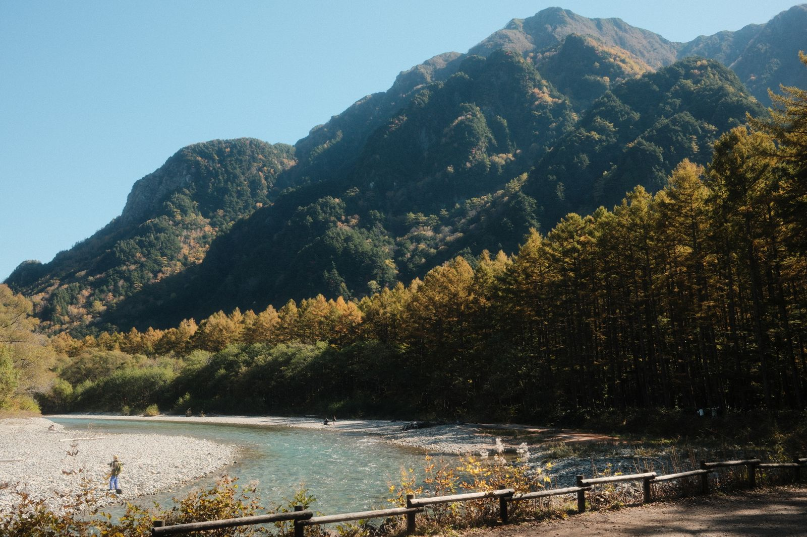
バス乗継で約30分（4月〜11月）
車で約20分
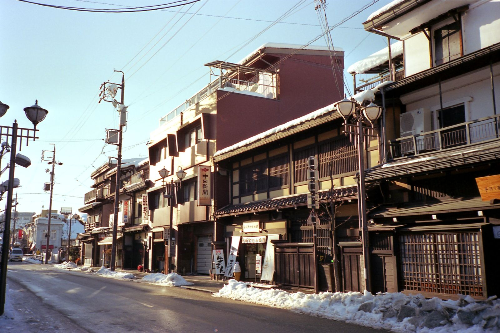
車で約1時間

車で約1時間45分
車で約40分